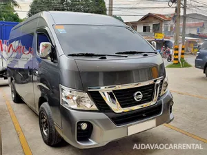
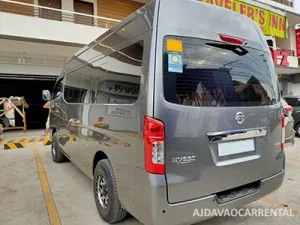
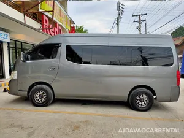
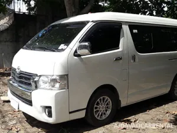
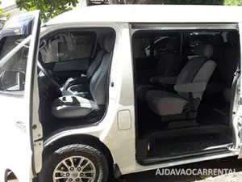
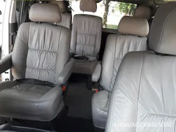
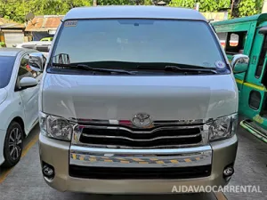
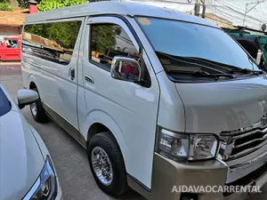
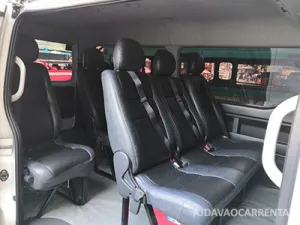

Van Rental in Davao? Here’s What You Need to Know
Van Rental – Vans are medium-sized vehicles designed to carry passengers or cargo. It is smaller than the smallest bus but can carry more than any vehicle with the same wheelbase. Vans come in 10-12-seater and 13-14-seater variants. Vans appeals to extended family groups, businesses, and commuters. AJ Davao Car Rental offers van rental in Davao City to any point in Mindanao.
Vans are very spacious vehicles. Even with its relatively small wheelbase, it can comfortably seat 10-14 people depending on the model. It comes with a large sliding side door which allows for easier entry and exit.
Van Rental Rates in Davao
Van Rental Rates typically starts at 4,000 per day for 10 hours use within the city. Rate includes fuel and driver’s fee. For out of town, rates may varies depending on destinations. Fuel, Driver’s meals and accommodation is added on top of the base rate for out of town destinations.
Want to Book an Van in Davao?
Contact our reservation officer for booking and inquiries:
Chat
Viber / WhatsApp: (+63) 926-733-5449
Mobile
Globe: (+63) 926-733-5449
Smart: (+63) 998-959-1074
AJDavao88@gmail.com
AJDavao Car Rentals
Types of Van Rental
Toyota Grandia Tourer – Luxury feel in affordable Van Rental rate
The Toyota Grandia Tourer is a spacious van available for rent. It comfortably seats 12 passengers in a luxurious feel cabin, offering ample space and a smooth ride for your group. The high roof enhances ventilation, keeping the cabin fresh and ensuring a relaxed experience throughout your trip.
Families and groups appreciate the spacious interiors, while adventurers benefit from the vehicles’ capability to handle off-road conditions with ease. Their elevated seating offers better visibility, making it easier to navigate and enjoy the stunning landscapes of Mindanao.


Nissan Urvan Premium – Big van for rent
The Nissan NV350 Urvan Premium another big van is available for rent. It can comfortably carry 12-14 passengers without jump seats. It has extended-wheelbase and high-roof design which makes the travel even more comfortable and fresh. Thanks to the high roof design that gives plenty of head room and fresh air above you.



Toyota Super Grandia – Comfortable Van Rental
The Toyota Super Grandia is another van for rent. This comes with captain seats, reducing the seating capacity, but making it a more comfortable excursion.



Toyota Grandia GL – Popular Van Rental Unit
The Toyota Grandia GL is available for rent. It is a standard van and the most popular for every van rental company. It has wide body that could carry 10-12 passengers at ease.



When should you rent a van?
If you’re on vacation with your family or a group of friends, it is much more secure to rent a van, or rent cars compared to commuting to unfamiliar place with unfamiliar people. Van rental provide great privacy, making it great for businessmen. Events, such as conventions and tours, which require the transport of ten to fourteen people, are the perfect niche for van rental. Any larger, a small coaster bus can accommodate; any smaller, MPVs and SUVs are a more appealing option because of its prestige, off-road capabilities. A group of twenty to thirty people has the option of two vans or a small coaster bus.
Ready to Rent a MPV in Davao?
Rent a MPV Car in Davao? We offer reliable vehicles at great prices. Reserve your ride today and hit the road!
CHAT: Viber / WhatsApp (+63) 926-733-5449
MOBILE: Globe (+63) 926-733-5449 • Smart (+63) 998-959-1074
E-mail: AJDavao88@gmail.com
Facebook: AJDavao Car Rentals